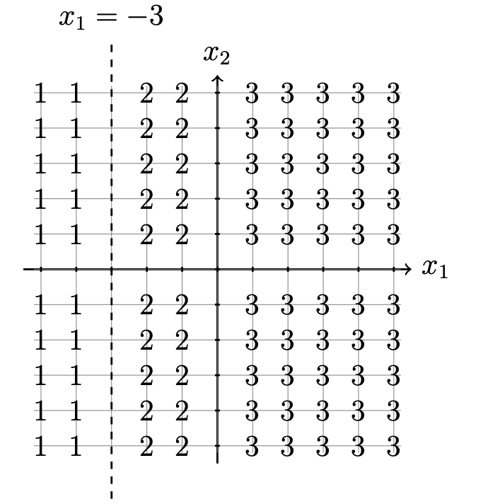
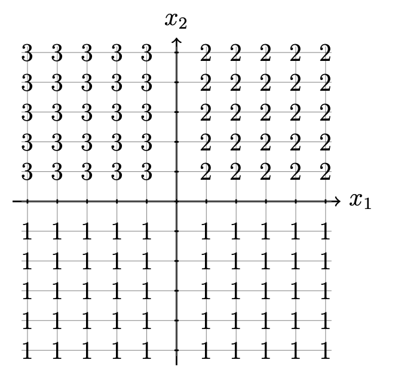
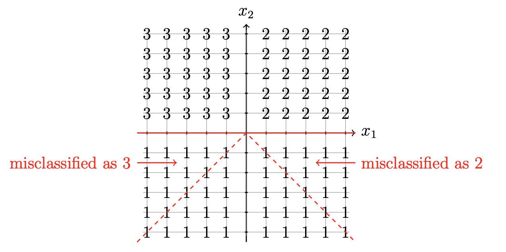
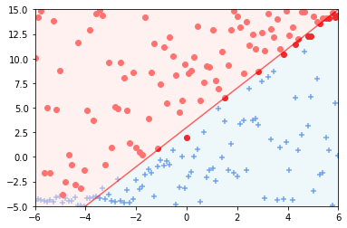
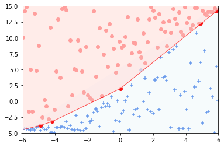
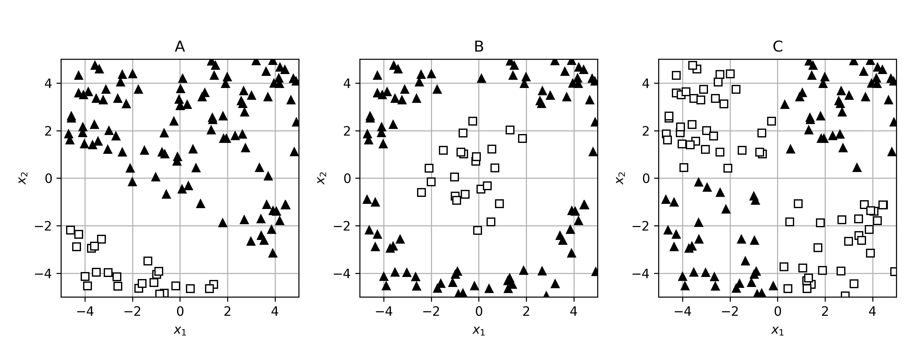
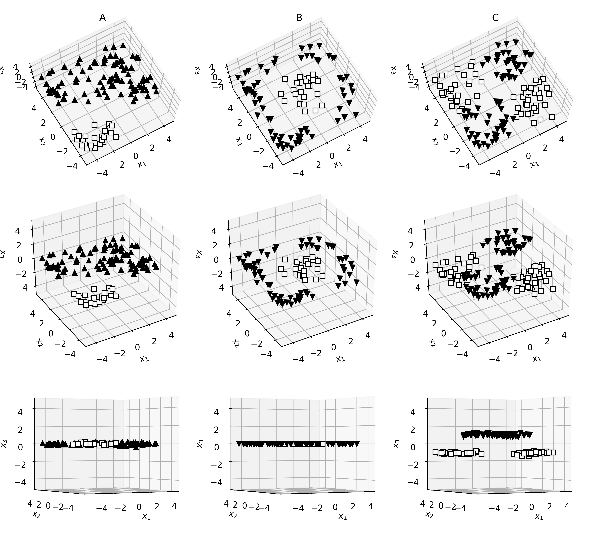
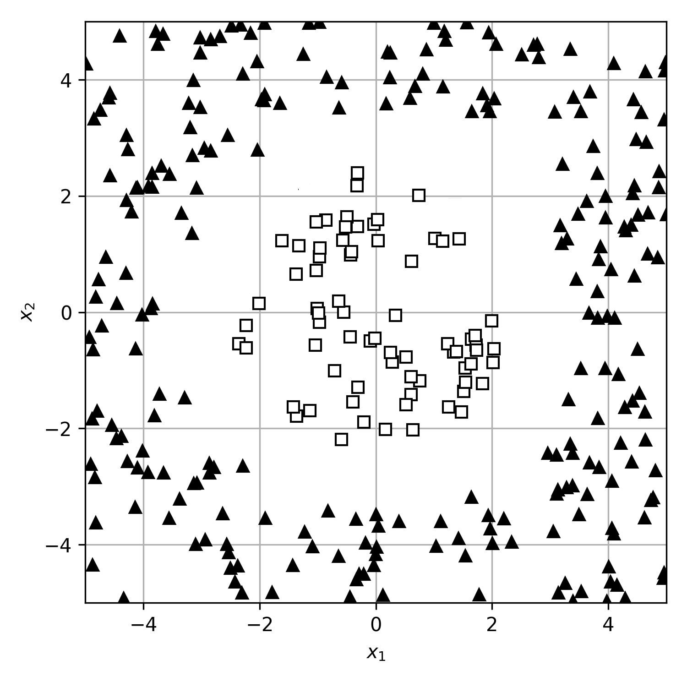
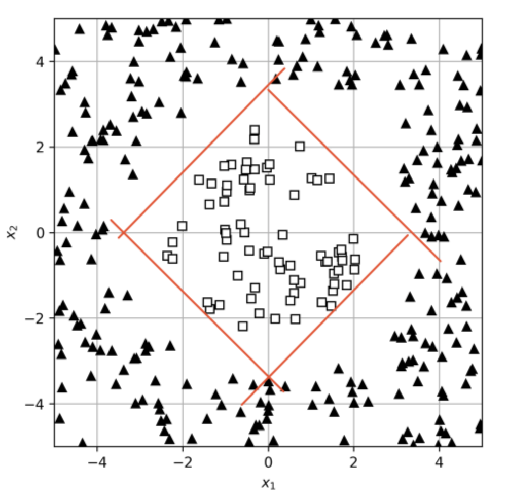
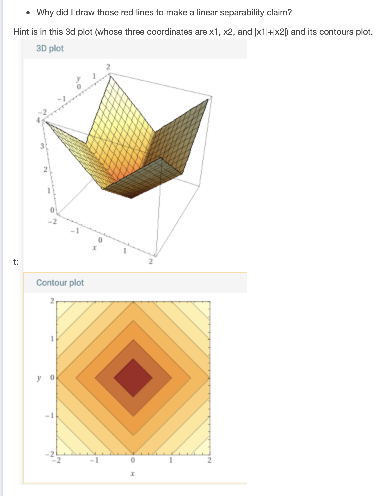

Classification
Problem 1
We would like to analyze a multiclass linear logistic classifier with \(K=3\) classes. For this part of the problem, we are working with only 2 input features \((x_1, x_2)\), \(\theta = [\theta_1, \theta_2]^T\), and \(\theta_0\). So, in this framing, let \(x\) be a data point, \(x=[x_1, x_2]^T\). Our \(\theta\) will be a \(3\times2\) matrix and let \(z = \theta^T x + \theta_0\) be a \(3 \times 1\) vector with \(z = [z_1,z_2,z_3]^T\).
Then, the output of the model will be defined as, \(g=\mathrm{softmax}(z)= \begin{bmatrix} \exp(z_1)/\sum_{i=1}^3 \exp(z_i) \\ \exp(z_2)/\sum_{i=1}^3 \exp(z_i) \\ \exp(z_3)/\sum_{i=1}^3 \exp(z_i) \end{bmatrix}.\)
Recall that the vector \(g\) represents the likelihood assigned to each of the three classes, and the class prediction is the made from the largest element of \(g\).
a) Suppose that we have a model defined by the following matrix: \(\theta = \begin{bmatrix} 1 & 0 \\ 0 & 1 \\ 0 & 0 \end{bmatrix},\) \(\theta_0 = \begin{bmatrix} 0 \\ 1 \\ 1 \end{bmatrix}.\)
Consider the data point \(x = [1,-1,1]^T.\) Compute \(z = \theta^T x\) and determine which class will be assigned to \(x\).
Answer: Class 1.
Explanation: \(z = [1,-1,0]^T\). Since first number is biggest, \(x\) will be assigned to class 1.
b) Examine the classification problem represented by the graph below, where points are labeled with their class: \(1, 2,\) or \(3\). Also given below is a model represented by the matrix \(\theta\) and vector \(\theta_0\).

\(\theta=\left [ \begin{array}{ccc} -1 & 0 \\ 0 & 0 \\ -3 & 0 \end{array}\right ]\) \(\theta_0=\left [ \begin{array}{ccc} 1 \\ 0 \\ 0 \end{array}\right ]\)
Does the provided model defined by \(\theta\) perfectly separate the data as desired in the graph above? Explain.
Answer: Yes.
Explanation:
Yes; we have that \(z = [-x_1 - 3, 0,x_1]^T.\) This implies that we will get a label of class 1 when \(x_1 \leq -3\), class 2 when \(x_1>-3\) and \(x_1\leq 0\), class 3 when \(x_1>0\).
c) Examine the classification problem represented by the graph below, where points are labelled with their class: \(1, 2,\) or \(3\). Also given below is a model represented by the matrix \(\theta\) and vector \(\theta_0\).

\(\theta=\left [ \begin{array}{ccc} 0 & 1 \\ -1 & 0 \\ 0 & 0 \end{array}\right ]\) \(\theta_0=\left [ \begin{array}{ccc} -1 \\ 0 \\ 0 \end{array}\right ]\)
Does the provided model defined by \(\theta\) perfectly separate the data as desired in the graph above? Explain.
Answer: No.
Explanation:
No; we have that \(z = [-x_2, x_1,-x_1]^T.\) This implies that we will get a label of class 1 when \(x_2 \leq 0\) and \(|x_1| < -x_2\), class 2 when \(x_1 \ge 0\) and \(x_1 > -x_2\), class 3 either when \(x_1<0\) and \(x_2>0\) or when \(x_2<0\) and \(x_1

Problem 2 Linear Logistic Regression
Recall that the output of a linear logistic regression model given an input \(x\) has the form: \(g = \sigma(\theta^{T}x + \theta_0)\) where \(\sigma(z) = \frac{1}{1+e^{-z}}\) is the sigmoid function. You start with the following set of points in two dimensions.
Inputs \(x^{(i)}\) | Labels \(y^{(i)}\) :---------------------: | :----------------: \([1, 1]^T\) | \(0\) \([0, 0]^T\) | \(0\) \([1, 0]^T\) | \(1\) \([0, 1]^T\) | \(0\)
For the following questions, assume \(\theta = [1, 0]^T\) and \(\theta_0 = -0.5.\) You may find it useful to sketch the dataset and the linear separator \(\theta, \theta_0.\)
a) What are the values of \(z=\theta^{T}x + \theta_0\) for each value of \(x^{(i)}\)? Give an answer as a list of four numbers (to max of two decimal places).
Answer: [0.5, -0.5, 0.5, -0.5].
Explanation: We plug each \(x\) into the formula \(z=\theta^{T}x + \theta_0\)
with \(\theta = [1,0]^T\) and \(\theta_0 = -0.5\). Plotting
the separator reveals that it is a vertical line in \((x_1, x_2)\)
space at \(x_1 = 0.5.\) Also plotting the points \((x,y)\) reveals that
the points to the left of the line have a negative \(z\) value, and
the points to the right of the line have a positive \(z\) value. Food
for thought: what \(\theta_0\) and \(\theta\) combination would yield
the same \(z\) values but exactly opposite signs?
b) What are the corresponding values of \(\sigma(z)\)? Give an answer as a list of four numbers (to max of two decimal places)?
Answer: [0.62245933, 0.37754067, 0.62245933, 0.37754067].
Explanation: Plugging into the formula \(\sigma(z) =\frac{1}{1+e^{-z}}\) where \(z\)'s are found in part a of this problem.
Remember that in linear logistic regression, we can interpret these \(\sigma(z)\) values as modeling the probability of the point having a label of 1.
c) With the threshold at \(0.5\), what are the corresponding predicted labels of these points? Give an answer as a list of four numbers (and recall that the label options are 1 or 0).
Answer: [1, 0, 1, 0].
Explanation: Points whose \(\sigma(z) \leq 0.5\) are classified
as 0. Points whose \(\sigma(z) > 0.5\) are classified as 1.
d) The average negative log-likelihood (NLL) loss over \(n\) data points has the form:
Remember that \(g^{(i)} = \sigma(\theta^{T}x^{(i)} + \theta_0)\) is our model's output (before thresholding) for training example \(i\), and \(y^{(i)}\) is the true label (+1 or 0). For our purposes in this problem, \(\log\) indicates the natural logarithm.
What is the value of the average NLL loss over the data -- given the particular values of \(\theta, \theta_0\) and the data given above (to max of two decimal places)?
Answer: 0.599075.
Explanation: Plugging into the formula, we get:
\(\frac{1}{n} \sum \mathcal{L}_{nll}(g^{(i)}, y^{(i)}) = \\ -\frac{1}{4}\Big(\log(1-0.6225) + \log(1-0.3775) + \log(0.6225) + \log(1-0.3775)\Big)\)
e) We have been considering mostly linearly separable cases so far. What would happen if a dataset is not linearly separable? Consider the following plots of decision boundaries for a nonlinearly separable 2D dataset. Assume that we used the linear logistic regression function: \(\sigma(\theta^T x + \theta_0)\)
A | B :-------------------------:|:-------------------------:

|
Which of the following is true:
- Only plot A shows the decision boundary that could have been learned by linear logistic regression algorithm.
- Only plot B shows the decision boundary that could have been learned by linear logistic regression algorithm.
- Both plots show the decision boundary that could have been learned by linear logistic regression algorithm. They have different shape (one is linear and one is curvy) because they might have been learned with different hyperparameters.
Answer: Only plot A shows the decision boundary that could
have been learned by linear logistic regression algorithm.
Explanation: For the linear logistic regression algorithm, remember
that the threshold for being considered positive is when
\(\sigma(\theta^T x + \theta_0) >0.5\). This happens when \(\theta^T x + \theta_0>0\).
And as we've seen before, the decision boundary
\(\theta^T x + \theta_0 = 0\) defines a hyperplane, and when the data
is 2D, that hyperplane is a line. So the classification boundary
must be a (single) line! Therefore, only plot A shows a feasible
decision boundary learned by the linear logistic regression algorithm.
Problem 3 Linear Separability
Below we plot three data sets. The \(x_1\) and \(x_2\) axes are the features available for training. Data points marked with black triangles are labelled as "1"; data points marked with white squares are labelled as "0". We want to train a model that can predict the class given the features.

Which of these data sets are linearly separable? For those that are linearly separable, choose any vector \(\theta\) and scalar \(\theta_0\) (written as [[\(\theta_1\), \(\theta_2\)], \(\theta_0\)]) such that the classifier defined by \(h(\theta^T x+\theta_0)\) classifies every point correctly. For those that are not separable, choose "not separable". \(h\) is the step function
.
a) A:
- [[2, 1], 0]
- [[1, 2], 4]
- not separable
Answer: [[1, 2], 4].
Explanation: One possible hyperplane that separates the data is oriented along the normal vector [1, 2] with an offset of 4. This corresponds to the line \(x_2 = (-1/2)*x_1 - 2\). Two points on the boundary defined by this hyperplane are (-4, 0) and (4, -4). One possible way to solve this is by creating the lines for example \(1x_1 + 2x_2 + 4 = 0\) then solve for \(x_2\) and see if that line separates the data.
b) B:
- [[1, 0], 0]
- [[0, 1], 0]
- not separable
Answer: not separable.
Explanation: There is no way to linearly separate the data.
c) C:
- [[1, 0], 0]
- [[0, 1], 0]
- not separable
Answer: not separable.
Explanation: There is no way to linearly separate the data.
The plots from the previous question had omitted one of the features available in the raw data. Below we plot all three features (in a 3D plot). Given that 3D plots shown in 2D can be confusing, each column plots the same data set viewed from different angles.

Given this new third feature, which of the data sets are linearly separable? For those that are, choose the vector \(\theta\) and scalar \(\theta_0\) (written as [[\(\theta_1\), \(\theta_2\), \(\theta_3\)], \(\theta_0\)]) defining the classifier by \(h(\theta^T x+\theta_0)\). For those that are not separable, choose "not separable".
d) A:
- [[1, 2, 0], 0]
- [[1, 2, 0], 4]
- not separable
Answer: [[1, 2, 0], 4].
Explanation: We can use the same hyperplane as before with the \(\theta_{3} = 0\) because the classification is insensitive to \(x_3\).
e) B:
- [[1, 0, 0], 0]
- [[0, 1, 0], 0]
- not separable
Answer: not separable.
Explanation: Each data point has the same value for the third feature, \(x_3 =0.\) Therefore, since the data was not linearly separable in \((x_1,x_2),\) the data is still not linearly separate with the added feature.
f) C:
- [[0, 1, 0], 0]
- [[0, 0, 1], 0]
- not separable
Answer: [[0, 0, 1], 0].
Explanation: We can now separate the data along the \(x_3\) feature. The classifier is \(h(x_3)\).
Problem 4 Feature Mapping
Consider the following dataset of 3 data points:
Each data point has a one-dimensional feature, and a binary label. For instance, the first data point has a feature of -1 and a label of +1. This data set is not linearly separable in its original form.
a) Which of these feature transformations lead to a separable problem? (Mark all that apply)
- \(\phi(x) = 0.5*x\)
- \(\phi(x) = |x|\)
- \(\phi(x) = x^3\)
- \(\phi(x) = x^4\)
- \(\phi(x) = x^{2k}\) for any positive integer \(k\)
- \(\phi(x) = x^{2k+1}\) for any positive integer \(k\)
Answer: \(\phi(x) = |x|\), \(\phi(x) = x^4\), \(\phi(x) = x^{2k}\) for any positive integer \(k\).
Explanation: The original dataset has a point in class \(0\)
at the origin and two points in class \(+1\) at \(\pm 1\).
1. \(\phi(x) = 0.5 \cdot x\) scales the points down by 0.5, such
that the \(+1\) points are still on opposite sides of the origin, so
(1) does not separate the data. A linearly inseparable dataset will
remain inseparable after any linear transformation is applied to the
data.
2. \(\phi(x) = |x|\) maps the class \(+1\) labelled points to \(1\)
and the class \(0\) labelled point to \(0\), so (2) separates the data.
3. \(\phi(x) = x^3\) maps the data to itself, so it does not
separate the data.
4. \(\phi(x) = x^4\) performs the same feature
mapping as (2).
5. \(\phi(x) = x^{2k}\) performs the same feature
mapping as (2), regardless of the integer \(k\).
6. $\phi(x) =
x^{2k+1}$ maps the data to itself the same as (3), regardless of the
integer \(k\).
b) Your friend Kernelius uses feature transformation \(\phi(x) = [x, x^2]^T\) on the data from the previous problem. In the new space, the linear classifier with \(\theta=[0,1]^T\) and \(\theta_0=-0.25\) achieves perfect accuracy. What points from the original feature space (\(x \in \mathbb{R}\)) will get classified as members of the negative class? (It may be helpful to find the equation of the separator.)
Enter a Python list denoting the inclusive range \([a, b]\) such that all values of \(x\in [a, b]\) are classified to be members of the negative class (points on the separator are classified negative):
Answer: [-0.5, 0.5].
Explanation: With \(\theta = [\theta_1, \theta_2]^T = [0,1]^T\) and \(\theta_0 = -0.25\),
our separator is the line \(\theta_2 = 0.25\) in \(\mathbb{R}^2\). From our
original space \(\mathbb{R}\), points mapped onto the separator are
those for which \(x^2=0.25\), leading to \(x=\pm 0.5\) on the
separator. Then, either points inside the range \([-0.5, 0.5]\) are
going to be class \(0\) or points outside the range \([-0.5, 0.5]\) are
class \(0\). We can see that if \(|x| \leq 0.5\), the equation $x^2 -
0.25$ will be negative. Hence, points \(x\) in the range \([-0.5, 0.5]\)
will be classified as members of class 0.
Problem 5 More Feature Transformation
Consider the two-dimensional data points shown below. Instead of using the original features \([x_1,x_2]^T\) we will consider transformations of them that might be able to make the data separable in the new feature space.

Consider the following new features:
- \(\phi_1([x_1,x_2]^T) = \sqrt{x^2_1 + x^2_2}\)
- \(\phi_2([x_1,x_2]^T) = x_1-x_2\)
- \(\phi_3([x_1,x_2]^T) = |x_1+x_2|\)
- \(\phi_4([x_1,x_2]^T) = |x_1|+|x_2|\)
For each of the features \(r_1 = \phi_1 ([x_1,x_2]^T)\), \(r_2 = \phi_2 ([x_1,x_2]^T)\), \(r_3 = \phi_3 ([x_1,x_2]^T)\), and \(r_4 = \phi_4 ([x_1,x_2]^T)\), indicate whether a one-dimensional linear classifier can perfectly separate the transformed data.
a) \(r_1\):
- separable
- not separable
Answer: separable.
Explanation: This feature transformation gives the distance
from the point to the origin. We see that the square points are all
less than some distance, \(R\), from the origin, and the triangle
points are all greater than \(R\) from the origin. The equation of the
separator would be \(r_1 = R\), and points with \(r_1 > R\) would be
classified as triangles, and those with \(r_1 \leq R\) would be
classified as squares.
b) \(r_2\):
- separable
- not separable
Answer: not separable.
Explanation: Separators take the form \(r_2 = R\) for some \(R\),
as our transformed points are in 1-D. In order to perfectly separate
the data, we would require that \(x_1-x_2 > R\) for every point in one
of the classes, and \(x_1-x_2 \leq R\) for every point in the other
class. This does not hold. For example, consider, approximately, the
square point at \((2, 0)\), which gets transformed to \((2)\), and the
triangle points at \((4, 0)\) and \((-4, 0)\) which get transformed to
\((4)\) and \((-4)\) respectively.
c) \(r_3\):
- separable
- not separable
Answer: not separable.
Explanation: Separators take the form \(r_3 = R\) for some \(R\),
as our transformed points are in 1-D. In order to perfectly separate
the data, we would require that \(|x_1+x_2| > R\) for every point in
one of the classes, and \(|x_1+x_2| \leq R\) for every point in the
other class. This does not hold. For example, consider,
approximately, the square point at \((2, 0)\), which gets transformed
to \((2)\), and the triangle points at \((2\sqrt{2}, -2\sqrt{2})\) and
\((4, 0)\), which get transformed to \((0)\) and \((4)\) respectively.
d) \(r_4\):
- separable
- not separable
Answer: separable.
Explanation: The decision boundary would be a diamond shape. Roughly like


Problem 6
Let's assume that a problem has a feature vector with three features \([x_1,x_2, x_3]^T\). For the following datasets, consider whether they are separable in either the feature space \([x_1,x_2]^T\), \(x_3\) or \([x_1,x_2,x_3]^T\)? Consider drawing the labelled data points in 3D.
a) Consider the dataset \(\mathcal{D} = \{([0,0,0]^T, 0), ([1,1,0]^T, 0), ([1,0,1]^T, 1), ([0,1,1]^T, 1)\}. \) Select all that apply.
- Separable in \([x_1,x_2]^T\)
- Separable in \(x_3\)
- Separable in \([x_1,x_2,x_3]^T\)
Answer: Separable in \(x_3\) and \([x_1,x_2,x_3]^T\).
Explanation: It is not separable in \([x_1,x_2]^T\) as this is
the classic XOR problem we saw in the feature representation
notes. It is separable if we include \(x_3\) because all the points
with label \(0\) have \(x_3 = 0\) and all the points with label \(1\) have
\(x_3 = 1\).
b) Consider the dataset \(\mathcal{D} = \{([0,0,0]^T, 0), ([1,1,1]^T, 0), ([1,0,0]^T, 1), ([0,1,0]^T, 1)\}. \) Select all that apply.
- Separable in \([x_1,x_2]^T\)
- Separable in \(x_3\)
- Separable in \([x_1,x_2,x_3]^T\)
Answer: Separable in \([x_1,x_2,x_3]^T\).
Explanation: It is not separable in \([x_1,x_2]^T\) as this is
the classic XOR problem we saw in the feature representation
notes. It is not separable in \(x_3\) because points with the same
\(x_3\) value have different labels. It is separable in
\([x_1,x_2,x_3]^T\) with \(\theta = [2, 2, -4]^T, \theta_0 = -1\). It's
also somewhat possible to mentally visualize this dataset and see
the separability directly, since all points lie on the unit cube.
c) Consider the dataset \(\mathcal{D} = \{([0,0,1]^T, 0), ([0,1,0]^T, 0), ([1,1,1]^T, 1), ([1,0,0]^T, 1)\}. \) Select all that apply.
- Separable in \([x_1,x_2]^T\)
- Separable in \(x_3\)
- Separable in \([x_1,x_2,x_3]^T\)
Answer: Separable in \([x_1,x_2]^T\) and \([x_1,x_2,x_3]^T\).
Explanation: It is not separable in \(x_3\) because points with
the same \(x_3\) value have different labels. It is separable in
\([x_1,x_2]^T\) with \(\theta = [3, -1]^T, \theta_0 = -1\). If it is
separable in \([x_1,x_2]^T\) it will be separable in
\([x_1,x_2,x_3]^T\), as we can set \(\theta_3 = 0\) and ignore that
feature.
d) Consider the dataset \(\mathcal{D} = \{([1,0,0]^T, 0), ([1,1,0]^T, 0), ([0,1,1]^T, 1), ([0,0,1]^T, 1)\}. \) Select all that apply.
- Separable in \([x_1,x_2]^T\)
- Separable in \(x_3\)
- Separable in \([x_1,x_2,x_3]^T\)
Answer: Separable in \([x_1,x_2]^T\), \(x_3\), and \([x_1,x_2,x_3]^T\).
Explanation: Any feature space with \(x_1\) in it will be
separable because all points with \(x_1 = 1\) have label \(0\) and all
points with \(x_1 = 0\) have label \(1\). Any feature space with \(x_3\)
in it will be separable because all points with \(x_3 = 0\) have label
\(0\) and all points with \(x_3 = 1\) have label \(1\).
e) Drew has obtained a new dataset. Each data point in this dataset is expressed by a feature vector \([x_1,x_2]^T\). Upon closer inspection, data points with the positive label have the following relationship between their features: \(x_2 = x_1^2+2\). For points with the negative label, we observe that \(x_2 = x_1^2 - 1\). Which of the following transformations of the original feature space make sure that any data set satisfying these relationships between \(x_1\) and \(x_2\) are linearly separable.
Select feature transformations that make the problem linearly separable:
- \([x_1^2 +x_2, x_2]^T\)
- \([-x_1^2 + x_2]^T\)
- \([x_1^2, x_2^2]^T\)
- \([x_1,x_1^2 - x_2]^T\)
- \([x_1^2 -1, x_1^2 + 2]^T\)
- \([x_1, x_2, x_1 - x_1^2]^T\)
Answer: Separable after \([x_1^2 +x_2, x_2]^T\), \([-x_1^2 + x_2]^T\), \([x_1,x_1^2 - x_2]^T\), and \([x_1, x_2, x_1 - x_1^2]^T\).
Explanation: Because \(x_2 = x_1^2 + 2\) if the data point has
a positive label, and \(x_2 = x_1^2 -1\) if the data point has a
negative label, then \(x_2-x_1^2 = 2\) for positive points and
\(x_2 - x_1^2 = -1\) for negative points. So, if \(x_2 - x_1^2\), or any linear
combination of it, is included as a feature, then the data will be
linearly separable. If \(x_2 - x_1^2\) is a feature, we can separate
the data via a separator with the equation
\(1 \cdot (x_2 - x_1^2) = 0\). The features in the two incorrect
options don't give us enough information to tell which of these
equations (the equation the positive points satisfy, and the
equation the negative points satisfy) hold. For all the correct
options, you can get \(x_2 - x_1^2\) from some linear combination of
the features:
For the first choice: We can take any linear combination of the two features, \(x_1^2 + x_2, x_2\). Consider \(2*(x_2) - 1* (x_1^2 + x_2) = x_2 - x_1^2\) as desired.
For the second choice: The second feature is already in the form \(x_2 - x_1^2\).
For the fourth choice: The linear combination to obtain the desired \(x_2 - x_1^2\) is simply -1*(second feature).
For the sixth choice: We can take any linear combination of the three features, \(x_1, x_2, x_1 - x_1^2\). Consider \(-1 *(x_1) + 1* (x_2) + 1 * (x_1 - x_1^2) = x_2 - x_1^2\) as desired.
You can also think about this graphically: plot all of the possible positive labeled and negative labeled points given the feature set and see if it is linearly separable. For option 3, we can place \(x_1^2\) on the x-axis and \(x_2^2\) on the y-axis. For positive labels, we have points described by \([x_1^2, (x_1^2 + 2)^2]^T\), which when plotted is the right half of plotting \(y = (x+2)^2\). Similarly, for negative labels, we get the right half of the plot of \(y = (x-1)^2\). There is no linear classifier that separates the two curves described by these two plots. A similar process can be done for option 5.
Problem 7 Multiclass!
Assume we are doing multi-class logistic regression with three possible categories.
a) What probability distribution over the categories is represented by \(z = [-1, 0, 1]^T\), where \(z\) is the vector of inputs to the softmax transformation? Enter a distribution (a list of three non-negative numbers adding up to 1) for the three categories. Your answers should be numeric (please enter numbers, and do not use the symbol \(e\)):
Answer: [0.090, 0.245, 0.665].
Explanation: We will plug into the formula for the softmax function. First, compute the numerators \(e^{z_1} = 0.368\), \(e^{z_2} = 1\), \(e^{z_3} = 2.718\). The outputs of the softmax are \(g_1\), \(g_2\), and \(g_3\) below:
b) If our output \(g = [.3, .5, .2]^T\) and \(y = [0, 0, 1]^T\), what is \(\mathcal{L}_{\text{NLLM}}(g, y)\) on this one point? Enter an expression involving log(.) (for natural log) and constants:
Answer: -log(0.2).
Explanation: Plugging into the NLL formula, we have:
In general, the \(\mathcal L_{\text{NLLM}}(g,y)\) will be negative log of the probability assigned to the label class, so in the above we could also just directly read off the answer by seeing that \(y_3 = 1\) and taking \(-\log(g_3)\).
c) Suppose we are doing multi-class logistic regression with input dimension \(d = 2\) and number of classes \(K = 3\). Let the parameter matrix be
Assume \(\theta_0 = [0,0,0]^T\), the input \(x = [1, 1]^T\), and the target output \(y = [0, 1, 0]^T\). These are numpied for your convenience below:
th = np.array([[1, -1, -2], [-1, 2, 1]])
x = np.array([[1, 1]]).T
y = np.array([[0, 1, 0]]).T
What is the predicted probability (confidence) that \(x\) is in class 1, before any
gradient updates? (Assume we have classes 0, 1, and 2.) Enter a number (to at least 3 decimal places):
Answer: .665.
Explanation:
th = np.array([[1, -1, -2], [-1, 2, 1]])
x = np.array([[1, 1]]).T
y = np.array([[0, 1, 0]]).T
def softmax(z):
return np.exp(z) / np.sum(np.exp(z))
z = th.T @ x
g = softmax(z)
print(g[1])